X positinnement.txt
Dorcel
Dorcel se positionne comme le lieu de tous les plaisirs : que tu l’aimes seul, à deux, ou à plusieurs, peu importe le genre que te définit, ton orientation sexuelle ou ta couleur de peau… tout le monde et le bienvenue, sauf ceux qui n’aiment pas le cul.
Dorcel est installé partout, à tous les niveaux. Ils ont plusieurs sites média à leur actif (Vision, Club, Xillimité, Expérience, TV, XXLTV, TV Africa, gayvodclub, xillimité gay). La société possède plusieurs sites d’infos (dorcel blog, dorcelgroupe, dorcelle) ainsi que des marketplace pour retrouver tous leurs produits en ligne (Sextoys, DVD, Lingeries, Aphrodisiaques, jeux, etc...). On peut également les retrouver en chaire et en os en France dans des magasins physiques : les DorcelStore.
X marché-dorcel.txt
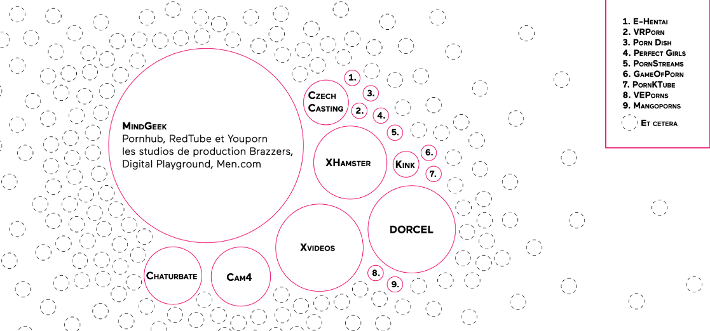cliquez sur l'image
Chez Dorcel, on ne parle pas de pornographie, mais de plaisir. Et le marché du plaisir aujourd’hui est extrêmement compétitif, saturé. La cause principale de cet état est l'existence d’innombrables sites de streaming gratuits. Ceux-ci sont possédés par des empires du milieu, par exemple mindgeek (possèdant Pornhub, RedTube et Youporn, ainsi que les studios de production Brazzers, Digital Playground, Men.com et Sean Cody) ou encore WGCZ Holding (xvidéos, site le plus visité au monde). En quelques chiffres, mindgeek c’est 115M de visiteur quotidiens, 3B d'impressions publicitaires, environ 15 TO de contenu téléversé pour à peine 1000 employés et 6 bureaux dans le monde. Très difficile de mettre en perspective Dorcel sur son marché. Et il en existe pleins d’autres encore, qui sont gérés par des indépendants comme xvidéos 43e site le plus visité au monde.
X structure.txt
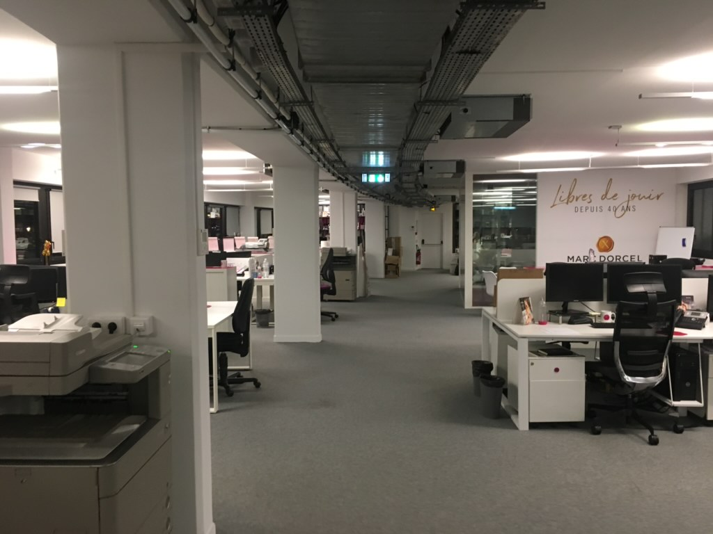
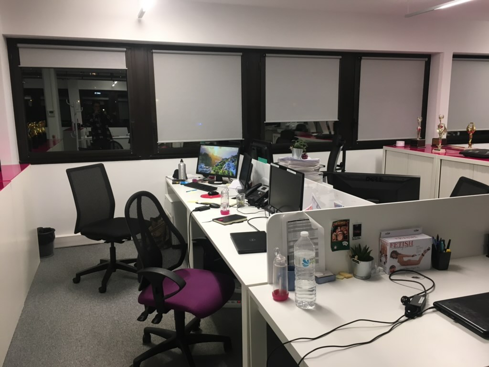
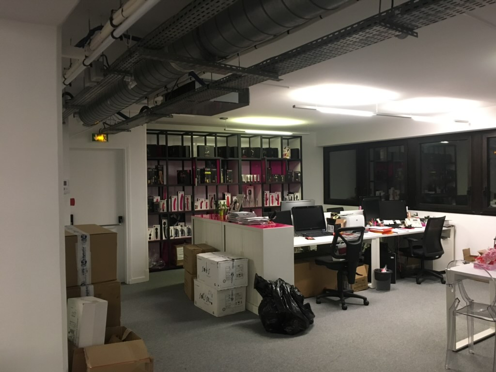
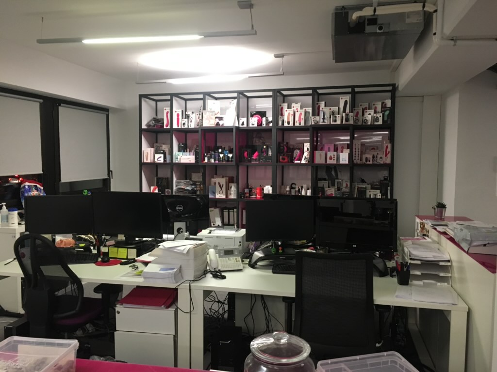
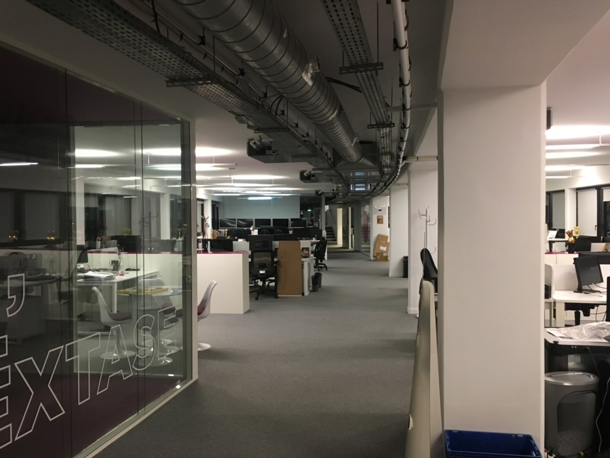
Dorcel est composé d'environ 80 personnes, une très grande partie d'entre eux se trouve à Kennedy dans le 15ème (photos ci-dessus). J’ai pu y rencontrer une bonne partie de l’agence, dans une ambiance familiale et bienveillante. La totalité de la production est assumée par Dorcel, seul le développement est assuré par des entreprises de développeur encadré par l'équipe projet.
Dorcel c'est : un pôle média, des graphistes, achats / ventes, projets, boutiques, marketplace, etc…
DorcelTV et TV Africa sont quant à eux répartis en Europe pour des raisons légales : un flux TV pornographique hébergé en France est interdit par la loi.
X stratégie.txt
Il faut noter que dorcel est une entreprise indépendante et autofinancée. Cela implique une stratégie solide et audacieuse.
Dorcel possède deux stratégies : physique et online. Pour ce qui est du physique, on peut voir du street marketing, des opé en tout genre, ainsi que de l'affichage.
Pour ce qui en est de la stratégie online (là où se déploie le plus d'effort), elle est de représenter la luxure à la française en étant toujours glamour, à la pointe des tendances, ou même de la technologie ! (DorcelVR et DorcelTV Africa est un bon exemple de leur ambition de vivre à leur époque).
Il y a évidemment des nuances à apporter selon les différents pôle Dorcel, mais cela donne une bonne idée de la route qu'il prévoit de tracer.
X SWOT.img
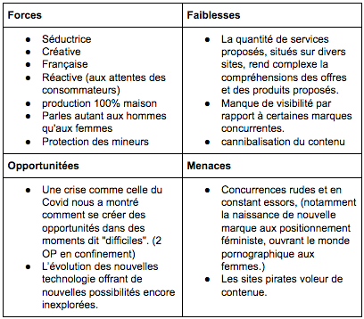
X Offre/DorcelVision.txt 🔥🔥🔥🔥
X Offre/DorcelClub.txt 🔥🔥🔥🔥🔥
X Offre/Xillimité.txt 🔥🔥🔥
X Offre/Expérience.txt 🔥🔥
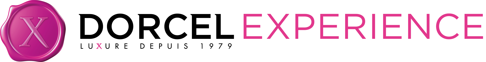
X Offre/Dorcel_TV.txt 🔥
X Offre/Dorcel_TV_Africa.txt 🔥🔥
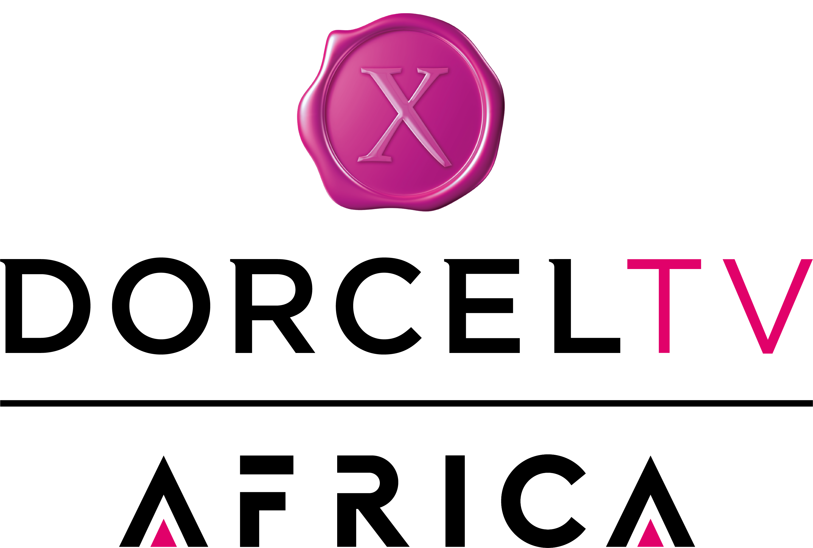
Des films, des séries et des castings produits et tournés intégralement en Afrique avec des producteurs, des réalisateurs, et des acteurs locaux.
X Offre/MarquesBlanches.txt 🔥🔥🔥
|
|
Afin de toucher d'autres types de consommateurs, trouvant Dorcel trop cher, d'autres plateformes ont étées créées avec des systèmes moins onéreux.
X Offre/DorcelStore.txt 🔥🔥🔥🔥
X enjeux.txt
enjeux principaux :
conserver sa place de leader européen dans l'univers pornographique.
se développer encore, dans l'innovation, dans le plaisirs.
enjeux secondaires :
ramener une image plus positive de l’univers pornograhique, et des gens qui y travaillent.
réduire les clichés sur ce milieu à néant.
élargir sa communauté : parce que le sexe c’est bien, c’est bon, c’est pour chacun et comme il le souhaite, toujours avec respect et consentement.
X valeurs.txt
Les valeurs de Dorcel sont intrinsèques à la marque depuis sa création, et se ressente dans sa manière de se développer, d’innover, dans ses créations technologiques ou ses prestations historiques, ainsi que dans la relation entretenue avec ses clients.
Plaisir
Des contenus et des produits érotiques luxueux pour le plaisir de tous les publics.
Stimulation
Une vision latine, assumée et piquante du sexe.
Sophistication
Une vision hautement qualitative du sexe.
Innovation
La capacité à toujours innover dans la création et la distribution de ses produits.
X Contexte/équipe
Le contexte dans l'équipe :
Directeur des OP digitales
2 Chefs de projets digital + 1 Alternant
Responsable expérience client & CRM
3 à 4 Graphistes
qui répondent aux besoins de
Équipe métiers des sites multimédia
Équipe VPC du DorcelStore et ce qui l'entoure
Équipe RS
Internet (SEO, Affiliation)
Grégory Dorcel Himself
Dans une moindre mesure on vient apporter une expertise digitale dans tous les services.
Dans une moindre mesure on vient apporter une expertise digitale dans tous les services.
X Contexte/gestion_de_projets
Il y a un prestataire par site
Cela m'as permis d'interagir et d’apprendre avec énormément de profils différents, ce qui a enrichi mon expérience au sein du groupe
Nous avons de nombreuses solutions extérieures
CRM - Inet
Mailing - SendInBlue
Hébergement (+500 nom de domaines) - Amazon & Microsoft
X présentation_de_mes_mission.txt
Mes mission traitaient principalement des sites médias. Dès mon arrivé en tant que stagiaire ce sont les plateformes qui m'ont étés affectées.
J’ai eu la chance de pouvoir faire beaucoup de choses différentes, touchant des degrés d’importance diverse pour la marque : entre missions régulières / répétitives / récurrentes, missions originales et étonnantes, certaines demandant de la rigueure et beaucoup de concentration et d’autres de la créativité, de l’ingéniosité et du dynamisme…
X présentation_de_mes_mission/Développement_de_nouvelles_fonctionnalitées.txt
Mise en place des carrousels d'affiliés, intégration d'un player multilingue, exit-offer, etc...
Le site étant déjà existant, il a fallu créer de nouvelles fonctionnalités sans dénaturer le site en question. Ce qui n’a pas toujours été une mince affaire… Respecter la charte graphique, la structure du développement du site selon son développeur, la manière dont le contenue est hébergé… comme nos prestataires sont différents. Toutes ces choses viennent donc brider ou orienter le processus de création et de développement. Les demandes de projet
X présentation_de_mes_mission/tâches_courantes.txt
Ces tâches sont incontournables en tant que Chef de Projet Digital
X présentation_de_mes_mission/intégration_dorcel_quality.txt
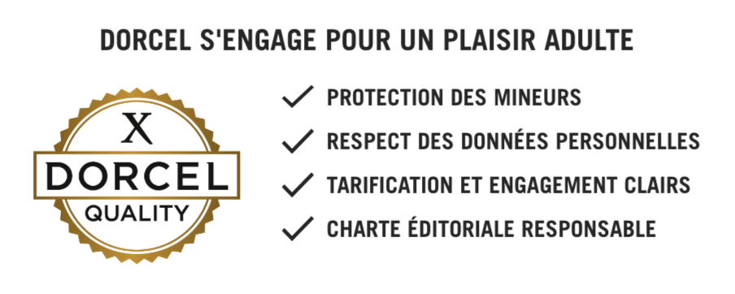
Le Dorcel Quality c'est :
Les phrase de réassurance de la marque
Liste les engagements de Dorcel
Démarche bienveillante, on ne s'attend pas à tomber sur ce genre de label quand on s'apprête à payer sur un site
Le Déroulé du projet :
Objectif : Généraliser l’apparition ce label sur les sites.
Il fallait réfléchir à une position dans les parcours qui ne gêne pas le processus d’achat<./li>
Proposer des mockup, faire réaliser des maquettes aux graphistes.
Briefer les dév, contrôler en préproduction lorsque le développement est terminé avant de confirmer la mise en production.
X présentation_de_mes_mission/progressive_voice_app.txt
L'objectif est de créer un porncast interactif, les technologies vocales constituent une véritable révolution des interactions du numérique.
X présentation_de_mes_mission/création_du_disclaimer.txt
Hugues est venu me voir avec sa proposition du disclaimer en mobile pour me demander de lui proposer une version adapté pour desktop, ce fut une tâche agréable à réaliser, d'autant plus que ma proposition à plus et est en train d'être déployé sur tous les sites.
X présentation_de_mes_mission/opérations_twitter.txt
Hugues est venu me voir pour que je réalise les pages qui récupèrent l'api de twitter en fonction d'un hashtag précis
X présentation_de_mes_mission/gestion_des_moyens_de_paiement_expirés.txt
Il est arrivé à Grégory Dorcel le cas où sa CB arrive a expiration sur NETFLIX.
La demande était d'avoir un système qui se déclenche lorsqu'un utilisateur arrive en fin d'abonnement et que sa CB est expirée, il reçoit un email avec un url pour mettre à jour sa cb et relance son abonnement. C'est un projet qui m'a pris beaucoup de temps de réflexion pour arriver à une proposition de mise en place fonctionnelle à un prix qu'Hugues pouvait accepter.
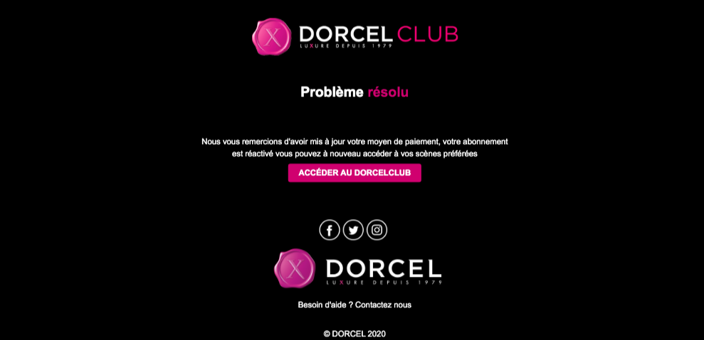
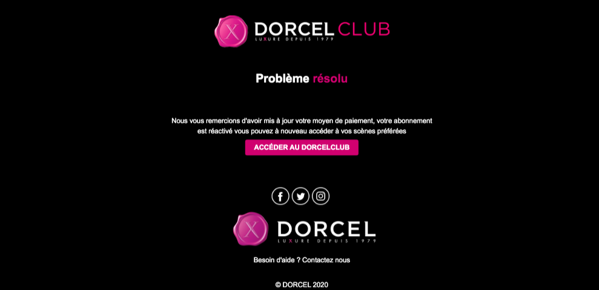
X présentation_de_mes_mission/page_adieux.txt
Lié au projet précédent.
Développement d'une page spécialement crée pour les utilisateurs dont l'abonnement expire. Avec un film remonté de façon comique et invitant à renouveler son abonnement avec une réduction.

X bilan/résultats.txt
+70 Projets gérés en 1an.
Dans ma liste de projets j'ai plus de 70 éléments, j'y note les projets qui me sont attribués, terminés en prod comme abandonné ou en stand by, certaines fonctionnalitées que je peux voir mal fonctionner que je me note à corriger plus tard, j'organise mes projets par priorité. Je n'y note pas les bugs que je règle généralement dans la foulée.
X bilan/réussite_1.txt
+ de 90% films dorcel piratés
Ca n'est pas ma plus grande réussite, mais je suis plutôt content de voir depuis quelques semaines un tube pirate qui m'avait donné un peu de fil à retordre, il avait piraté plus de 90% des films dorcel d'années différentes, il avait même mis le logo dorcel dans son header qui menait vers la page du studio. Il a aujourd'hui totalement retiré le contenu Dorcel de sa plateforme.
X bilan/réussite_2.txt
La confiance
Ma plus grande réussite est de loin d'avoir gagné la confiance de mes deux tuteurs dans cette entreprise, Yoan puis Hugues, qui m'ont progressivement donné des tâches de plus en plus significatives pour l'entreprise, ca m’a permis de gagner celle des autres collaborateurs de l'entreprise, de faire leur connaissance et me lier d'amitié avec nombre d'entre eux.
X bilan/leçon.txt
Hack Myself !
Lors du développement des pages web pour diffuser l'opération HiddenPleasure, j'ai malencontreusement créé une faille de sécurité chez Dorcel, en effet dans le but de réduire les frais un maximum, j'ai donc hébergé ces pages sur github, un service très connu chez les développeur, totalement libre, j'avais donc dans mon code en libre service un lien vers l'api qui me fournissait les codes promos. Heureusement que le seul à s'en être rendu compte était whitehat, et nous a gentiment prévenu sur twitter (après s'être servit d'un lifetime...). J'ai toujours un peu honte de cette histoire bien qu'elle m'ait vraiment servi de leçon.
X bilan/compétences_apprises.txt
A LOT !
X bilan/humain.txt
Qu’ai-je appris ? d’un point de vue humain, équipe, management ?
X bilan/expérience.txt
Comment cette expérience va alimenter mon projet professionnel ?
Cette expérience chez dorcel m'a conforté dans l'idée que chef de projet digital était un métier qui me plaisait. elle m'a fait comprendre de son utilité au sein d'une entreprise, l'importance d'être un point de relais pour les différentes facette d'un projet digital, un facilitateur et une tête de réflexion supplémentaire avec une vision globale des enjeux.
X bilan/témoignages.txt
Hugues Mariton | Directeur opé digital | Mon tuteur
" Virgile est arrivé en stage chez nous puis en alternance en tant que chef de projet digital.
Virgile est autonome, rigoureux, responsable et apporte beaucoup à l’équipe. Il a appris à s’adapter à ses interlocuteurs et à l’organisation pour prendre un vrai rôle de facilitateur dans les projets et à se positionner comme un intervenant clé.
Virgile est également très disponible et à l’écoute ce qui est très agréable. "
X bilan/témoignages.txt
Pierre | Graphiste
" Je pense ne pas avoir assez travaillé avec toi pour témoigner sur ton évolution.
Toutefois je peux quand même dire que j’ai beaucoup apprécié travailler avec toi, tes briefs sont toujours clairs, et tu es très réactif.
Je te trouve à l’aise et serein dans tes missions, et je n’avais pas trop l’impression d’avoir un alternant en face de moi, mais plutôt un vrai collègue. "
X bilan/témoignages.txt
Laure Sarah | Responsable VOD web
" Travailler avec Virgile est un réel plaisir. Proactif, agréable et consciencieux, il a au fur et à mesure de sa mission, entièrement pris sa place de chef de projet comme un collaborateur de l’entreprise le fait à temps plein.
Ses projets sont rondement menées et c’est appréciable ! "
Ses projets sont rondement menées et c’est appréciable ! "
X bilan/témoignages.txt
Benoit Bonneville | développeur chez Hexaglobe
" J'ai été content de travailler avec toi, tu as su poser les questions avec ténacités jusqu'à obtenir les réponses.
Les sujets qui t'on été proposés n'étaient clairement pas les plus simple, mais c'était vraiment du concret. "
Les sujets qui t'on été proposés n'étaient clairement pas les plus simple, mais c'était vraiment du concret. "
X remerciments.txt
Un énorme merci à Hugues, Matthieu, Yoan
J’ai été honoré par cette possibilité d’intégrer Dorcel, pour moi c’est une marque iconique, nombre de rappeurs que j’aime la citent, et au delà de ça, j’ai fait quelques exposés sur l’univers du porno à l'ESD. Cette alternance, cette entreprise, m’a appris à me professionnaliser, à prendre conscience de l’intensité du métier de chargé de projet digital, et du besoin auquel il répond.
Alors à la base c’était plus pour m’amuser, et ce monde est bien plus intéressant et riche que je pouvais l'imaginer. Je ne ferai pas ma vie dans ce milieu, mais je suis heureux d'avoir découvert l’envers du décors, de l’envers du décors.
Alors à la base c’était plus pour m’amuser, et ce monde est bien plus intéressant et riche que je pouvais l'imaginer. Je ne ferai pas ma vie dans ce milieu, mais je suis heureux d'avoir découvert l’envers du décors, de l’envers du décors.
X score.pop
WOW MEN
0
POPUPS DÉTRUITES !?
Rechargez la page... Chaques expérience est différente
clique sur le bandeau pour accèder au cv de l'étudiant
clique sur le bandeau pour accèder au cv de l'étudiant